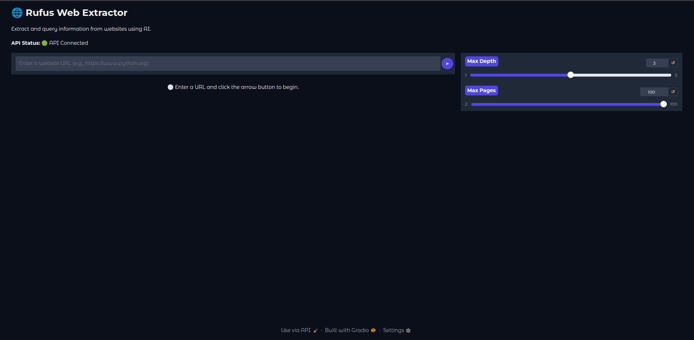
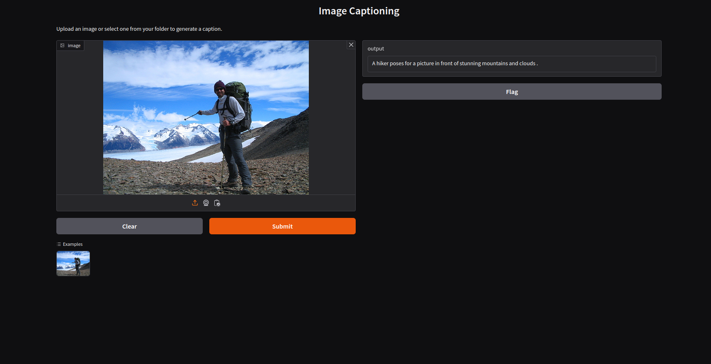
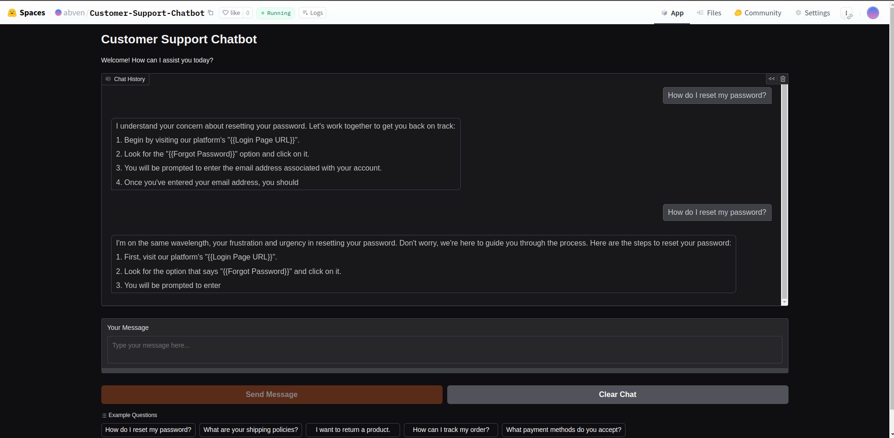

Current Projects
MedhAItron - Neuro Assistive Robotics Initiative
MedhAItron is my startup-focused project to build an intelligent neuro-assistive system that translates brain activity (EEG) into real-time control of a robotic exoskeleton. The goal is to help people with severe motor impairments regain functional movement through a safe, adaptive, and responsive brain-computer interface.
The platform combines high-resolution EEG acquisition, signal preprocessing, feature extraction, and deep-learning-based neural decoding to convert intent into motion commands. These commands are then executed through an AI-assisted planning and control pipeline to deliver smooth and stable exoskeleton movement aligned with the user's intended action.
My long-term vision is to build a personalized closed-loop rehabilitation system that improves over time using biosignal feedback, sensor fusion, and adaptive learning.
I am actively looking for collaborators, mentors, and early partners in neuroscience, biomedical engineering, robotics, and AI/ML. If this aligns with your work or interests, reach out at [email protected].
DriveAlign - Autonomous Driving with RLHF
Built a full Reinforcement Learning from Human Feedback (RLHF) pipeline for autonomous driving inside the MetaDrive simulation environment. Trained a multimodal PPO agent from scratch using a custom gated CNN + MLP architecture. The CNN branch processes live RGB camera frames while the MLP branch processes a stacked history of 4 ego-state vectors covering speed, steering angle, yaw rate, lateral offset, and boundary distances. A learned gate layer dynamically weights how much to trust vision versus scalar signals depending on the driving context.
Implemented a complete 7-phase RLHF pipeline: base PPO agent, vision integration, segment recording, human feedback collection, reward model training, RLHF fine-tuning, and metrics visualization. Human preferences are collected by watching the agent drive in real time and scoring each segment.
My Projects
Enhanced Monocular Depth Estimation with Grasp Pose Prediction
Successfully implemented a project in robotic vision and manipulation that combines advanced depth estimation with practical grasping capabilities. Fine-tuned Apple's Depth-Pro model to achieve significant improvements in monocular depth estimation, particularly excelling in scenarios where traditional depth sensors fail. When tested with the ReactorX-200 robotic arm at 30cm height, conventional depth sensors produced null values, while our enhanced monocular depth system maintained accuracy with just 1-2cm error margin. Developed and deployed an innovative Grasp Transformer model that leverages RGB images and monocular depth data to predict optimal grasp poses for robotic manipulation.
Rufus - Agentic Web Data Extractor for RAG Systems
🤖 Engineered a cutting-edge AI-powered web extraction system that revolutionizes how data is gathered and processed for RAG (Retrieval-Augmented Generation) applications. Rufus intelligently crawls websites based on natural language instructions, making complex data extraction as simple as writing a prompt.
Key Features
- AI-Driven Crawling: Advanced crawling algorithms powered by LLMs (TinyLlama, with planned OpenAI integration).
- Smart Content Selection: Intelligent filtering mechanisms that identify and extract only the most relevant content.
- Dynamic Navigation: Robust handling for complex web structures, including nested links and dynamically loaded content.
- Structured Output: Sophisticated document synthesis pipelines that convert raw web content into clean, structured formats.
Technical Implementation
- Core Architecture: Built with Python, FastAPI for REST endpoints and Gradio for UI. Containerized with Docker.
- LLM Integration: Leveraged LangChain for orchestrating LLM operations.
- Vector Storage: ChromaDB for efficient storage and retrieval of document embeddings.

Research-Paper-RAG
Developed a production-ready Research Paper Analysis System leveraging Retrieval-Augmented Generation (RAG) architecture. The system efficiently processes academic papers from the arXiv dataset, utilizing FAISS for similarity search and Flan-T5 for text generation. Built on Google Cloud Platform, it features a FastAPI backend deployed on Vertex AI, with a user-friendly Gradio interface for real-time querying. Implemented with a robust CI/CD pipeline using GitHub Actions.
Image Captioning with Vision Transformer and GPT-2
Image caption generator that uses a Vision Transformer (ViT) to extract visual features from images and a GPT-2 model to generate natural language descriptions. The model is deployed on both AWS and Hugging Face, allowing users to upload images and receive descriptive captions in real-time.

Real Time Customer Support Chatbot
🤖 Developed and deployed an enterprise-level customer support chatbot leveraging LLM technology for automated, context-aware responses. Implemented comprehensive MLOps practices with full monitoring and versioning capabilities. Containerized the solution with Docker, featuring an interactive Gradio UI for seamless model interaction and testing.

Miniature Self Driving Car
Implemented a high-performance object detection system on Raspberry Pi 4, achieving 98% accuracy in real-time identification of traffic signs, pedestrians, and obstacles. Demonstrated practical application through successful integration with a miniature autonomous vehicle, enabling self-guided navigation in controlled environments.